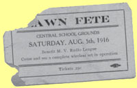

Ward-Thomas Museum


First ‘Wireless’ Connection Device
Ward — Thomas
Museum
Home of the Niles Historical Society
503 Brown Street Niles, Ohio 44446
Click here to become a Niles Historical Society Member or to renew your membership
Click on any photograph to view a larger image, click on image again to zoom into photograph.
|
Seated: W. F. MacQueen, Chris
E. Rose, Thomas H. Madden Sr., Fred Alexander |
First
‘Wireless’ Connection Device. As difficult as it is for the younger generation to believe it, there once was a time when there were no televisions, VCRs, DVDs or video games. In those days whole families would gather around their radios to listen to news broadcasts comedy shows, dramas or music free to let imagination provide the pictures to go with the words coming through the air. These were advanced forms of entertainment in comparison to the early days of radio. After Marconi sent his wireless message across the Atlantic many people became interested in the possibilities this presented. Young people began to experiment with wireless or crystal sets, amazing their friends and neighbors with the voices they could pull out of the air. In 1922 a local newspaper announced that Hutton and Jones Electric Company in Warren had established Trumbull County’s first radio station. It was reported that their broadcast could be heard as far away as Canton, Ohio. In 1926 Warren Williamson, Jr. and C. M. Colpennmg went on the air with the Youngstown station WKBN. During the elections that fall, the Youngstown Vindicator compiled election results, gave them to Williamson by telephone and he then put them on the air. |
|
| |
||
|  |
The
text on the ticket reads — Lawn Fete The Union print bug appears in the lower right hand corner. |
A scientist was quoted in the 1960’s as predicting, “what is wired today will be wireless, and what is wireless today will be wired”. Think about your cable television and cell phone. What changes will the next generations experience? |
|
|
||
{kind=link}